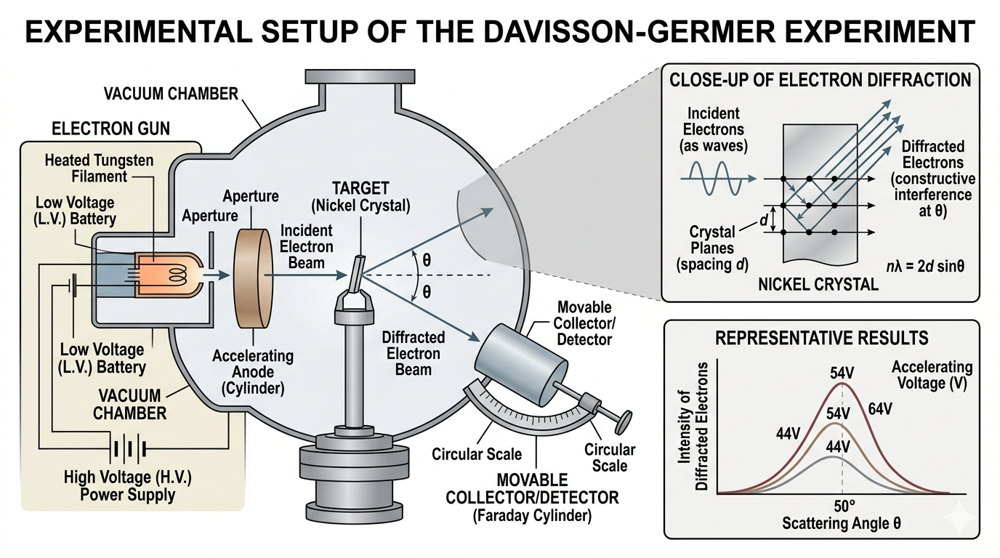
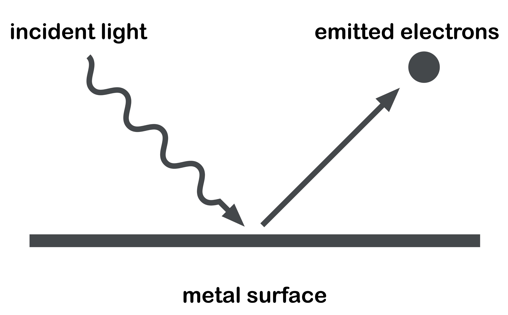

Chapter 1:
Introductory Wave Mechanics
1.1 Inadequacy of Classical Mechanics
OR
What are the inadequacies of classical mechanics? What is the result of them?
Classical mechanics describes the motion of macroscopic particles such as stars, planets, and moons, as well as microscopic particles like bacteria or viruses. It describes the motion of particles in the non-relativistic limit, i.e., \(v \ll c\)
Newtonian mechanics is based on the concepts of:
(a) Absolute space
(b) Absolute time
(c) Absolute mass
Due to certain limitations of classical mechanics and its wrong assumptions, it could not explain the following physics phenomena:
1. It could not explain the spectrum of Black body radiation.
According to the classical theory of radiation, the energy density of Black body radiation is:
Therefore, the total energy density is $ \int_0^\infty U(\nu, T) \, d\nu $
Substituting the classical expression: $$\int_0^\infty U(\nu, T) \, d\nu = \frac{8 \pi k T}{c^3} \int_0^\infty \nu^2 \, d\nu$$
$$\implies \int_0^\infty U(\nu, T) \, d\nu = \frac{8 \pi k T}{c^3} \left[ \frac{\nu^3}{3} \right]_0^\infty$$
$$\implies \infty \quad \text{(ultraviolet catastrophe)}$$
The total energy density at temperature $T$ comes out to infinity, but experimentally the total energy should be finite and measurable.
2. It couldnot explain the stability of atom.
According to classical theory, an accelerated electron around the nucleus of an atom lossed its energy in the form of the radiation and its energy continuously decreases. Radius of electronic orbit also decreases and electrons jumps inside nucleus and atoms becomes unstable. But in real, atom is stable.
3. It couldnot explain discrete atomic spectrum.
According to classical theory, energy exchange between an atom and the radiation field must be continuous. However, atoms absorb and emit discrete energy in units of $h\nu$.
4. It couldnot explain stark effect, zeeman effect.
5. It could not explain the tunneling effect.
The process of crossing high-energy barriers with low-energy particles is called the tunneling effect.
This phenomenon can only be explained using quantum mechanics.
Example: Ejection of low-energy $\alpha$-particles from the high binding energy of a Uranium nucleus.
6. It could not explain the Photoelectric effect.
According to the classical theory of radiation, the K.E. of emitted electron (photoelectron) depends upon intensity of radiation, independent of frequency.
According to the experimental observation of Einstein photoelectric effect, the K.E. of photoelectron depends upon frequency of incident radiation, independent of intensity.
$h\nu = \phi_0 + \frac{1}{2} m_e v^2$
where, $h\nu$ = energy of the incident photon
$\phi_0$ = work function
$m_e$ = mass of the electron
$v$ = speed of the electron
$\therefore K.E. \propto h\nu \quad \text{(for } \nu > \nu_0 \text{, where } \nu_0 = \frac{\phi_0}{h} \text{ is the threshold frequency)}$
In classical mechanics, we cannot explain the threshold frequency.
7. It could not explain the phenomenon of pair production.
8. It could not explain the phenomenon of compton scattering.
According to classical theory, the frequency of scattered radiation should be equal to the frequency of incident radiation, i.e., there should be no change in frequency.
$d\nu = 0$
$d\lambda = 0$
(which is the classical concept)
According to the Compton effect, the observed shift in wavelength of scattered radiation is given by:
where, $\lambda'$ = wavelength of scattered radiation
$\lambda$ = wavelength of incident radiation
$m_0$ = rest mass of the electron
$v$ = speed of the electron
$\theta$ = scattering angle
9. It could not explain the phenomenon of superconductivity.
10. Classical mechanics could not explain the existance of phonon (smallest part of sound wave).
11. It could not explain the phenomenon of radioactivity ($\beta$-decay, $\alpha$-decay).
1.2 Historical Development of Quantum Theory
1. The Energy Packet Idea (Max Planck, 1900)
• The Problem (Classical Failure): Classical physics used the Rayleigh-Jeans Law, which predicted that an object would radiate infinite energy at short wavelengths (high frequencies). This was the "Ultraviolet Catastrophe."
• The Limitation: Planck originally viewed this as a mathematical "trick" to make the curve fit the data. He did not yet believe that light itself was physically made of particles.
2. The Photoelectric Effect (Albert Einstein, 1905)
Einstein used Planck's "packet" idea to explain the Photoelectric Effect. He proved that light acts like a stream of particles called photons. When a photon hits a metal surface, it gives its energy to an electron to knock it loose.
• The Limitation: While it explained light-matter interaction, it didn't explain the internal structure of the atom or why atoms don't collapse.
3. The Quantized Atom (Niels Bohr, 1913)
• How it Solved the Limitation: Bohr applied quantization to the electron's motion. He argued that electrons can only exist in specific "stationary" orbits where they do not radiate energy.
• The Solution: This explained the Hydrogen Emission Spectrum—the specific colors of light emitted when an electron "jumps" between orbits.
• The Limitation: The Bohr model was a "semi-classical" hybrid. It worked perfectly for Hydrogen (1 electron) but failed for larger atoms like Helium and could not explain the relative intensity of spectral lines.
4. Matter Waves (Louis de Broglie, 1924)
• De Broglie suggested that if light can act like a particle, then particles (like electrons) can act like waves. This is known as Wave-Particle Duality.
• The Limitation: This was a conceptual breakthrough but lacked a general wave equation to describe how these waves behave in different force fields (like inside a complex atom).
5. Wave Mechanics & Uncertainty (Heisenberg & Schrödinger, 1925–1927)
• How it Solved the Limitation: Schrödinger developed a partial differential equation (the Wave Equation) to describe the behavior of $\psi$ (the wave function). Heisenberg showed that because particles are waves, we cannot know their position and momentum perfectly at the same time.
• The Solution: This "Modern Quantum Mechanics" replaced Bohr's fixed orbits with probability clouds (orbitals). It works for all elements on the periodic table.
• The Limitation: These equations were non-relativistic. They did not work for particles moving near the speed of light and did not account for the spin of the electron or antimatter.
6. Quantum Field Theory (QFT) (1930s–Present)
• How it Solved the Limitation: Dirac, Feynman, and others merged Quantum Mechanics with Special Relativity.
• The Solution: This led to the discovery of Antimatter and the creation of the Standard Model, which describes how all forces (except gravity) work through the exchange of particles in "fields."
• Current Limitation: Quantum Theory currently fails to include Gravity (General Relativity). We still do not have a "Theory of Everything" that explains the center of a Black Hole or the very beginning of the Big Bang.
1.3 Davission Germer Experiment: result and its interpretation
Davisson–Germer Experiment (Existence of Matter Wave for Electron)
Before 1927, waves (like light) and particles (like electrons) were thought to be completely different. De Broglie suggested that every moving particle has a wavelength ($\lambda$) related to its momentum ($p$):
The Davisson–Germer experiment was designed to see if electrons could produce an interference pattern, something only waves can do.

The first experimental evidence that a beam of particles shows wave-like properties was given by American physicists Davisson and Germer.
Davisson and Germer measured the de-Broglie wavelength for slow electrons accelerated by a potential difference ranging from 30 V to 100 V by the diffraction method.
The beam of electrons is produced from an electron gun. The gun consists of a filament F heated to red, so that electrons are emitted by the process of thermionic emission. The electrons are accelerated by a potential difference and hence gain certain velocity.
The collimated (narrow/fine) beam of electrons falls on the single crystal of nickel called the target. Then these electrons undergo reflection and are incident on collector C, which is connected to a galvanometer. The collector is capable of moving on a graduated circular scale as shown in the figure.
Working: Initially the accelerating potential (V) is given a low value and the collector is placed at a certain position. Now, as the value of accelerating potential increases, the collector is moved to various positions on the scale and the corresponding galvanometer current is noted.
The observations are repeated for different accelerating potentials and corresponding curves are drawn. The important curves are shown in the figure below:

Figure 2: Diffraction curves obtained in the Davisson–Germer experiment.
It is seen that a hump begins to appear in the curves for 44 volt electrons. With increasing potential, the hump moves upward and becomes most prominent in the curve for 54 volt electrons at $\phi = 50^\circ$.
At higher potentials the hump gradually disappears. The humps in their prominent state indicate the existence of electron waves.
Calculation from de-Broglie Hypothesis
From de-Broglie hypothesis
The kinetic energy ($E_k$) is related to momentum ($p$) by:
For an electron with charge ($e$) accelerated by voltage ($V$):
The de-Broglie equation:
Putting in the values: In the actual experiment, the most prominent peak occurred at ($V = 54\,V$).
- $h \approx 6.626\times10^{-34}\,J\cdot s$
- $m \approx 9.1\times10^{-31}\,kg$
- $e \approx 1.6\times10^{-19}\,C$
Calculation from Bragg’s Law (Experimental)
The electrons were scattered by a Nickel crystal. To use Bragg's law, we need to distinguish between the scattering angle ($\phi$) and the glancing angle ($\theta$).
- Scattering Angle ($\phi$): The experiment found a peak at $\phi = 50^\circ$.
Glancing Angle ($\theta$): This is the angle with the atomic planes. They are related by:
- Interplanar Spacing ($d$): For Nickel, $d = 0.91\,\text{Å}$.
Applying Bragg’s law ($n = 1$):
Conclusion
Comparing the two results:
- Theoretical (de-Broglie): $1.67\,\text{Å}$
- Experimental (Bragg): $1.65\,\text{Å}$
The values are in excellent agreement. This proves that electrons, which are particles, undergo diffraction, a property exclusively belonging to waves.
Limitations of the Davisson–Germer Experiment
1. Particle Size Limit: The experiment is specifically tailored for subatomic particles (electrons, protons, neutrons). Larger particles possess momenta that result in de Broglie wavelengths ($\lambda$) far too small to be resolved by the atomic spacing of crystals.
2. Target Noise: The high-energy incident beam can trigger the emission of secondary electrons from the target atoms. This creates background "noise" that can obscure the primary diffraction signal.
3. Limited Penetration: Because low-energy electrons are used, they only interact with the topmost atomic layers. Consequently, this method probes surface physics rather than the bulk internal structure of the material.
4. Narrow Energy Window: Destructive and constructive interference (Bragg peaks) are only clearly observable within a specific voltage range—typically between 44 V and 68 V—with the most prominent peak occurring at 54 V.
1.4 de-Broglie waves
Wave–Matter Duality of Radiation
In certain experimental observations, radiation behaves as a wave.
For example, experiments associated with:
(i) Interference
(ii) Diffraction
(iii) Polarization, etc.
In some experimental observations, radiation behaves as a stream of particles.
For example:
(i) Compton effect
(ii) Photoelectric effect
(iii) Discrete emission and absorption of radiation by a black body, etc.
The same radiation behaves as both a wave and a particle. This nature of radiation is known as wave–matter duality of radiation.
According to Planck's theory:
According to Einstein's mass-energy relation:
From equations (1) and (2):
$$h \frac{c}{\lambda} = mc^2$$
$$\lambda = \frac{h}{mc}$$
Also, using momentum $p = mc$:
Wave-Particle Duality: The Quantum Paradox
In classical physics, particles and waves are mutually exclusive; a particle is a localized object, while a wave is a disturbance spread through space. However, quantum entities like electrons and photons defy this distinction (break this rule) by acting as both, depending on how we choose to measure them.
Dual Behaviors: Particle-like behavior is characterized by energy being exchanged in discrete "packets" known as quanta. Conversely, wave-like behavior is evidenced by particles demonstrating interference and diffraction patterns, phenomena traditionally reserved for fluid or sound waves.
Light: Both Ripple and Bullet
Light was the first entity to break the classical mold. Thomas Young’s Double-Slit Experiment (1801) provided wave evidence by showing light creates interference patterns. Later, Albert Einstein’s explanation of the Photoelectric Effect (1905) proved light also behaves as a stream of particles called photons, where energy is defined by:

Figure: The Photoelectric Effect showing incident light ejecting electrons from a metal surface.
Matter as a Wave: The de Broglie Hypothesis
In 1924, Louis de Broglie proposed a radical symmetry: if light could behave like a particle, then matter must be able to behave like a wave. He introduced the de Broglie wavelength ($\lambda$), which bridges the gap between a particle's physical properties (mass $m$ and velocity $v$) and its wave-like nature:
Experimental Confirmation
The Davisson–Germer experiment (1927) provided the "smoking gun" for matter waves. By firing electrons at a nickel crystal, researchers observed a diffraction pattern. Since diffraction is a wave-specific phenomenon, this confirmed that even solid matter possesses an underlying wave nature.
1.5 Group and Phase velocity: relations and applications
Wave Packet
In quantum mechanics, a wave packet is a localized disturbance that results from the superposition of many individual waves of different wavelengths.
While a single, pure sine wave (a plane wave) extends infinitely through space, a wave packet is confined to a specific region, making it the mathematical tool used to represent "particles" like electrons.
The Superposition Principle
The Wave Packet
A wave packet is constructed by adding together multiple harmonic waves, $e^{i(kx-\omega t)}$, using a Fourier transform. While a single frequency wave is spread out infinitely, combining waves with a range of different wavenumbers ($k$) allows them to interfere constructively in one specific region and destructively elsewhere.
$$\psi(x,t) = \int_{-\infty}^{\infty} A(k) e^{i(kx - \omega t)} dk$$
Equation: Superposition of waves creating a localized packet.
This localization is the mathematical foundation for the Heisenberg Uncertainty Principle: the more you narrow the range of position ($x$), the wider the range of wavenumbers ($k$) you must include.
Mathematically, a 1D wave packet $\Psi(x,t)$ is often represented as a superposition of plane waves:
Where $A(k)$ is the amplitude function (or spectral weighting) that determines the "shape" of the packet in momentum space.
Group vs. Phase Velocity
Phase Velocity vs. Group Velocity
When a wave packet moves, we must distinguish between two different speeds that describe its motion:
The speed of the individual ripples (oscillations) inside the packet.
The speed at which the overall "envelope" or localized peak moves. In quantum mechanics, this represents the particle's actual velocity.
Dispersion: The Spreading Packet
Dispersion and Evolution
In a vacuum, light waves of all frequencies travel at the same constant speed ($c$). However, for matter waves (such as an electron), the frequency $\omega$ depends on the wavenumber $k$ in a non-linear way:
Because these constituent waves travel at different speeds, the wave packet inevitably spreads out over time. A "sharp" electron—highly localized at $t=0$—will evolve into a broad, fuzzy cloud as time progresses. This phenomenon is a direct consequence of the wave nature of matter and the Schrödinger equation.
Connection to Uncertainty
The Uncertainty Principle Connection
The wave packet is the physical manifestation of the Heisenberg Uncertainty Principle. This fundamental limit arises from the Fourier relationship between space ($x$) and momentum ($p$):
If the packet is very narrow in space ($\Delta x$ is small), you must sum a very wide range of wavenumbers to construct it ($\Delta k$ is large).
Since momentum $p = \hbar k$, a tightly localized spatial packet automatically implies a high uncertainty in momentum ($\Delta p$).
$$\Delta x \Delta p \geq \frac{\hbar}{2}$$
This inequality represents the inescapable trade-off in quantum measurements.